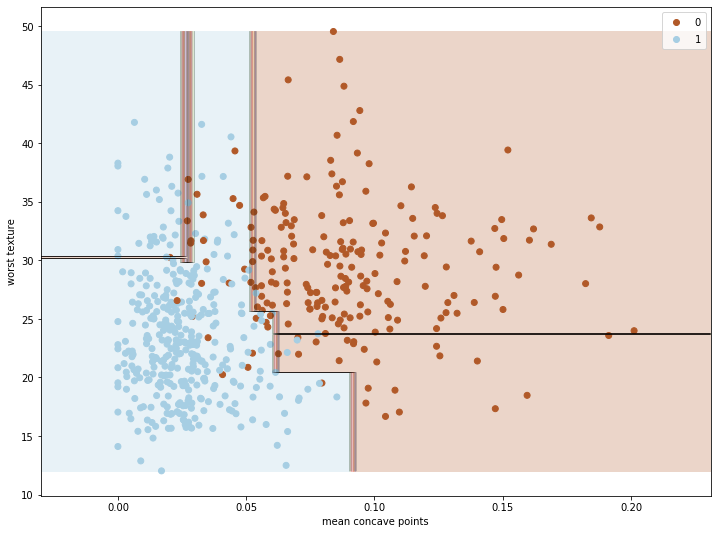
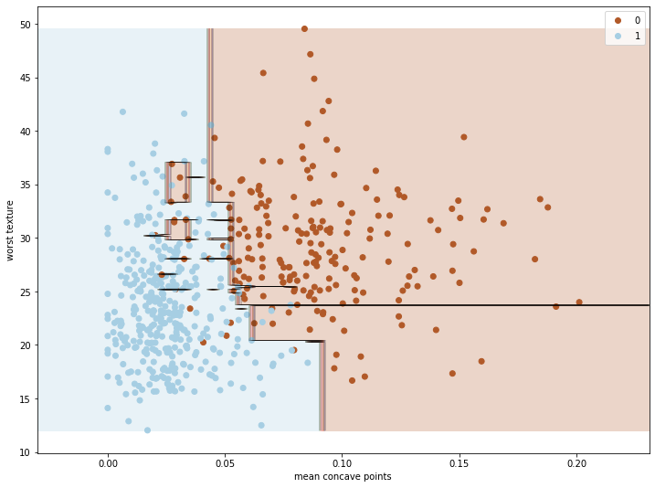

โดย ชิตพงษ์ กิตตินราดร | มกราคม 2563
Boosting เป็นอีกเทคนิคใน Ensemble learning ที่ใช้ Classifier หลายๆ Instance มาช่วยกันสร้างโมเดลและพยากรณ์
การอธิบาย Boosting ให้เข้าใจง่าย น่าจะลองเปรียบเทียบว่ามันต่างกับ Random forest อย่างไร ทั้งคู่เป็น Ensemble learning เหมือนกัน โดย Random forest จะใช้ Classifier หลาย Instance สร้างโมเดลและทำนายพร้อมกัน โดยใช้ "กฎของจำนวนขนาดใหญ่" (Law of large numbers) เป็นคุณสมบัติที่ทำให้การทำนายนั้นแม่นยำกว่าการใช้ Classifier เดี่ยวๆ
ส่วน Boosting นำ Classifier หลายตัวมาทำงานเป็นโซ่ต่อกัน โดยแต่ละตัวจะแก้ไขจุดด้อยของ Classifier ตัวก่อนหน้า พอเทรนเสร็จแล้ว Classifier ทุกตัวจะพยากรณ์ร่วมกัน
ในบทนี้จะแนะนำ Boosting algorithm ที่เป็นที่นิยมสองตัว คือ AdaBoost และ GradientBoosting
AdaBoost เป็น Algorithm พื้นฐานของ Boosting method จึงควรลองทำความเข้าใจเพื่อเป็นฐานสำหรับ Algorithm อื่น
หลักการทำงานของ AdaBoost คือการใช้ Classifier ที่ไม่ซับซ้อน เช่น Decision tree ที่มีชั้นเดียว (เรียกว่า Decision stump) หลายๆ Instance มาเทรนต่อกันเป็นลูกโซ่ โดยในการเทรนแต่ละรอบจะมีการกำหนดค่าน้ำหนักของข้อมูลแต่ละรายการ Classifier instance จะเรียนรู้จากค่าน้ำหนักเหล่านั้น โดยถ้าพยากรณ์ผิด ค่าน้ำหนักของรายการนั้นจะมีค่ามากขึ้น ส่งผลให้ Classifier instance นั้นได้รับ "คะแนน" ต่ำ แต่ในทางกลับกัน ถ้า Instance ไหนพยากรณ์ถูกเป็นสัดส่วนที่มาก ก็จะได้คะแนนมาก
การพยากรณ์ของ AdaBoost คือการถ่วงคะแนนเข้ากับคำตอบของแต่ละ Instance แล้วเลือกคำตอบจาก Class ที่ได้รวมแล้วได้ค่าน้ำหนักมากที่สุด
ขั้นตอนการทำงานอย่างละเอียดของ AdaBoost มีดังนี้:
1) กำหนดน้ำหนัก ตั้งต้นของข้อมูลแต่ละรายการเป็น โดย คือจำนวนรายการข้อมูลทั้งหมด:
เช่น ถ้ามีข้อมูล 500 รายการ น้ำหนักของ
2) เทรน Classifier instance แรกและคำนวนอัตราความคลาดเคลื่อน โดยเปรียบเทียบระหว่างผลรวมของน้ำหนักของทุกๆ รายการที่ทำนายผิด กับผลรวมของน้ำหนักของทุกๆ รายการ:
เราเรียกสมการที่ (2) นี้ว่า Weighted error rate ของ Classifier
3) นำ Weighted error rate นี้มาคำนวนหาน้ำหนัก ของ Classifier ดังนี้:
4) นำน้ำหนัก ของ Classifier ไปอับเดตน้ำหนัก ของข้อมูลแต่ละรายการ ตามเงื่อนไขดังนี้:
แล้ว Normalise น้ำหนัก ของข้อมูลแต่ละรายการ ด้วยการหารด้วยผลรวมของ ทั้งหมด:
จากสมการที่ (4) จะเห็นว่ารายการที่ทำนายผิด จะได้รับการ Boost หรือเสริมค่าน้ำหนัก เพื่อให้ Classifier instance ในรอบถัดไปเทรนซ้ำในสมการที่ (2) โดยเทรนจากค่าน้ำหนัก ใหม่ของข้อมูลแต่ละรายการ
AdaBoosting จะทำกระบวนการที่ (2) ถึง (4) วนซ้ำไปเรื่อยๆ โดยจะหยุดก็ต่อเมื่อ:
n_estimators หรือ5) เมื่อต้องการพยากรณ์ ก็จะคำนวนค่าพยากรณ์ ของทุกๆ Classifier instance โดยถ่วงน้ำหนักค่าพยากรณ์แต่ละ Instance ด้วยค่าน้ำหนัก ของ Classifier แต่ละ Instance ดังนั้น ค่าพยากรณ์ของ Instance ที่มีความแม่นยำ จะมีค่ามาก ได้รับการพิจารณามาก
คำตอบสุดท้ายที่ AdaBoost พยากรณ์ คือคำตอบที่ได้รับเสียงโหวตที่ถ่วงน้ำหนักแล้วมากที่สุด
สังเกตว่า AdaBoost ให้ค่ากับ Instance ที่ "เก่ง" มากกว่าที่ "ไม่เก่ง" ในขณะที่ Ensemble learning แบบ Random forest ให้ค่าน้ำหนักทุก Instance เท่ากัน
ข้อสังเกตที่สำคัญอีกประการก็คือ AdaBoost ไม่ได้มีเป้าหมายที่ทำให้ Classifier instance ตัวถัดๆ ไปมีความแม่นยำขึ้น แต่ทำงานโดยการเก็บคะแนนความแม่นยำของแต่ละ Instance เอาไว้เพื่อเอามาถ่วงน้ำหนักการตัดสินใจเมื่อต้องการพยากรณ์ในภายหลัง
ใน scikit-learn เราสามารถเรียกใช้ AdaBoost ได้ จาก AdaBoostClassifier class ในโมดูล sklearn.ensemble
Gradient boosting เลือกวิธีการในการ Optimise อีกวิธี โดยการพยายามให้ Classifier instance ที่มาใหม่แต่ละตัว มีความแม่นยำขึ้นเรื่อยๆ โดยเรียนรู้จากค่าความคลาดเคลื่อนสะสมที่เกิดจากการทำนายของ Instance ก่อนหน้า
การทำงานของ Gradient boosting เข้าใจไม่ยาก สมมุติว่าเราใช้ DecisionTreeRegressor เราสามารถจำลอง Algorithm นี้ได้จากโค้ดดังนี้:
from sklearn.tree import DecisionTreeRegressor
tree_reg1 = DecisionTreeRegressor(max-depth=2)
tree_reg1.fit(X, y)
จากนั้นเราเทรน DecisionTreeRegressor instance ที่ 2 จากความคลาดเคลื่อนสะสม ซึ่งก็คือความต่างระหว่าง กับ :
y2 = y - tree_reg1.predict(X)
tree_reg2 = DecisionTreeRegressor(max-depth=2)
tree_reg2.fit(X, y2)
และทำแบบนี้อีกครั้ง:
y3 = y2 - tree_reg2.predict(X)
tree_reg3 = DecisionTreeRegressor(max-depth=2)
tree_reg3.fit(X, y3)
ส่วนเวลาพยากรณ์ เราจะเอาคำตอบของการพยากรณ์ทุกๆ Instance มาบวกกัน ซึ่งก็คือ:
โดย คือจำนวน Instance ทั้งหมด
แต่ในความเป็นจริงเราไม่ต้องโค้ดเองแบบนี้ สามารถใช้ GradientBoostingRegressor หรือ GradientBoostingClassifier class ในโมดูล sklearn.ensemble ของ scikit-learn ได้เลย
ในแต่ละรอบ Classifier instance จะเทรนจาก Input X เดียวกัน แต่เปลี่ยน y ให้เป็นความต่างของค่าพยากรณ์กับคำตอบจริง ระหว่าง Instance ก่อนหน้ากับ Instance ปัจจุบัน (Residual error)
ส่วนการ Regularise นั้น Gradient boosting เป็น Algorithm ที่ค่อนข้างไม่ Overfit ง่ายจนเกินไป โดยถ้าหากเราตั้ง learning_rate เป็นค่าต่ำๆ จะทำให้ต้นไม้แต่ละต้นมีส่วนในการเรียนรู้น้อยลง นั่นหมายความว่าเราจะต้องใช้ต้นไม้จำนวนมากขึ้นเพื่อฟิต Train set วิธีนี้มักจะช่วยให้ Generalise ไปยังข้อมูลที่โมเดลยังไม่ได้เห็นได้ดีกว่า ดังนั้น สิ่งที่ควรรู้ก็คือ หากเราลดค่า learning_rate เราจะต้องเพิ่ม n_estimators ด้วย เพื่อลด Bias/underfit
ภาพแรกแสดง learning_rate=0.1, n_estimators=3 แสดงให้เห็นว่าโมเดลนั้น Underfit เล็กน้อย ควรแก้ด้วยการเพิ่มจำนวนต้นไม้ n_estimators:

ภาพที่สองแสดง learning_rate=0.1, n_estimators=200 แสดงให้เห็นว่าเมื่อเพิ่มจำนวนต้นไม้แล้ว โมเดลสามารถฟิตข้อมูลได้ดียิ่งขึ้น แต่ก็ยังไม่ Overfit จนเกินไป:

โดยสรุปแล้ว Algorithm ตระกูล Gradient boosting ซึ่งรวมทั้ง XGBoost เป็นกลุ่ม Algorithm ที่ยืดหยุ่น แม่นยำ และประสิทธิภาพดีที่สุดกลุ่มหนึ่งในปัจจุบัน
มาถึงจุดนี้ เราได้รู้จักกับ Supervised learning algorithm หลักๆ ครบแล้ว (ยกเว้น Neural networks ซึ่งจะเป็นหัวข้อใหญ่อีกกลุ่มหนึ่ง) บทต่อไปเราจะทำความรู้จักกับ Unsupervised learning algorithm เช่น K-Means clustering กัน
หน้าแรก | บทที่ 10 Random Forest | บทที่ 12 Clustering